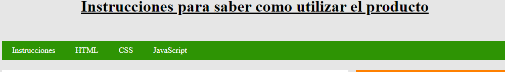

Datos importantes
Antes de poder ver el producto, es necesario saber cómo se utiliza. En este apartado están los datos necesarios. Esta página web está formada por 4 secciones: las instrucciones (es esta sección), HTML, CSS y JavaScript. Para poder ir a cada sección, hay que hacer click en los elementos que se encuentran en la barra verde localizada debajo del título (Como se muestra en la imagen).  En segundo lugar, al hacer click en los elementos del índice, En segundo lugar, al hacer click en los elementos del índice, estos te llevarán automáticamente a los apartados de cada sección (no es necesario hacerlo). En tercer lugar, una función de mi página web es que si se hace zoom en ella, el formato de esta se adapta al tamaño de la pantalla en vez de estropearse. En último lugar, es muy importante que se den los datos que se piden, no tienen porque ser reales, solo sirven para que la página funcione. Además, no se guardan, al salir de la página web desaparecen. Si te saltas alguno o los quieres cambiar, no tienes más que recargar la página web y escribirlos de nuevo.